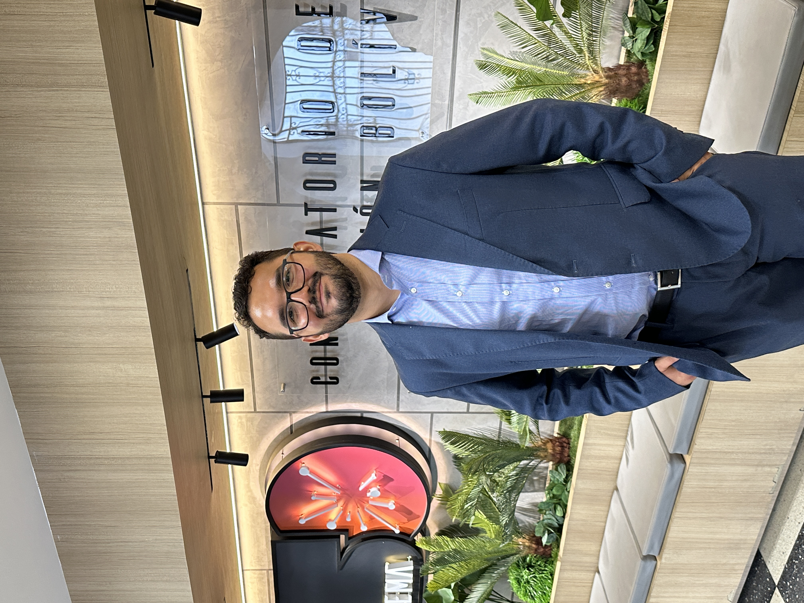

Music Direction
President, Artistic & Music Director
Daniel López Piepoli
Daniel founded the Berlinisches Sinfonieorchester with a clear belief: that an orchestra should be a vibrant, welcoming community where exceptional musical rigor meets genuine human connection.
As President and Music Director, he shapes the orchestra's artistic vision, conducts our season programs, and builds partnerships with Berlin’s cultural venues. He works closely with musicians across the city to scout talent, curate bold repertoire, and ensure the project remains sustainable and true to its social and musical mission.